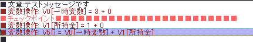

・右クリックメニュー
挿入ウィンドウを開く：⑫と同等
コマンド編集：ダブルクリックと同等
切り取り・コピー・貼り付け・削除：X・C・V・Delの各キーと同等
選択範囲の先頭へジャンプ：選択範囲の先頭を表示します。条件分岐が長くなったときに便利です。
選択範囲の最後尾へジャンプ：選択範囲の最後尾を表示します。条件分岐が長くなったときに便利です。
特殊コピー コマンド文→クリップボード：Windowsのクリップボードに、書いてある「コマンド文」をそのままテキストとしてコピーします
特殊コピー イベントコード→クリップボード：Windowsクリップボードに、選択コマンドをウディタ用イベントコマンドとして処理できる形のテキストデータとしてコピーします。
特殊貼り付け クリップボード→イベントコード：Windowsのクリップボードに入っているテキストデータを、ウディタ用イベントコマンドとして貼り付けます。
テキストのフォーマットさえ正しければ、ブラウザやメモ帳などからコピーしたコードでも貼り付けできます。
ただし、内容をいじって想定されていないパラメータにしたりすると、正常に処理できなくなります。
※コードの例（以下のWoditorEvCOMMAND_START～ ～ENDまでをコピーすると、
ウディタの「特殊貼り付け」でそのままイベントコマンドとして貼り付けられます。
行の先頭に空白があってはいけません）
WoditorEvCOMMAND_START
[103][0,1]<0>()("WOLF RPGエディターはこれからも進化し続けます！")
WoditorEvCOMMAND_END
【各部の説明】
１．マップイベント一覧
今いるマップに存在する全イベントが一覧表示されています。イベント名をクリックすると、そのイベントを開くことができます。ダブルクリックするとイベントがある場所にマップを移動させます。
また、右クリックメニューから切り取り・コピー・貼り付け・削除が出来ます。
２．名前 / 新規ページ・コピー・削除・ペースト
名前欄にはイベントの名前を入力します、特に何も入力しなかったときは画像のファイル名が自動で入れられます。ゲーム的には意味はありませんので、自由に設定してください。
「新規ページ・コピー・削除・ペースト」の各ボタンは、イベントページの追加・削除を行うためのものです。イベントページは1～10ページまで作ることが可能で、ページ数の大きい方を優先してイベントが実行されます。なお新規ページの隣にある「＜」は、現在の左にページを追加することを表し、「＞新規追加」は現在の右にページを追加します。
３．ページボタン
イベントページを選択します。
４．イベントグラフィック指定
この欄をダブルクリックするとキャラクター画像が選択ができます。
なお、ここでイベントグラフィックとして「マップチップ」を選択すると後述する【１０】の「影グラフィック」は表示されませんので注意してください。
影グラフィックが表示されるのは「キャラチップ」のみです。
５．移動ルート指定
イベントの移動ルートを選択します。移動ルートは「動かない」「カスタム」「ランダム」「プレーヤー接近」の4種類から選択できます。
・動かない … まったく動きません。
・カスタム … あなた自身がルートを指定します。「ルート」ボタンを押すと「動作指定ウィンドウ」が表示されます。
・ランダム … ランダムな方向へ移動します。
・プレーヤー接近 … プレーヤーキャラクターへと接近してきます。ただし、ある程度距離が離れるとランダム移動になります。
また、移動速度、移動頻度、アニメ速度の3種類についての設定が可能です。それぞれの影響は以下の通りです。
・移動速度 … その名の通り、イベントの移動するスピードを選択します。
・移動頻度 … イベントは基本的に、1マス移動するごとに停止しますが、移動頻度を上げることでその停止する長さを減らすことができます。移動頻度を「毎フレーム」にすると停止せず動き続けます。
・アニメ頻度 … イベントのアニメーションの切り替わる頻度を設定します。アニメ頻度を「毎フレーム」にすると凄い早さでジタバタします。
６．オプション
イベントの動作や特徴を設定します。以下は各オプションのチェックをオンにしたときの処理です。
・待機時アニメ … イベントが移動していないときにアニメさせます。
・移動時アニメ … イベントが移動しているときにアニメさせます。
・方向固定 … イベントの方向を固定します。
・すり抜け … イベントをすり抜けられるようにします。「決定キー起動」や「接触系起動」の場合、イベントに重ならないと起動できなくなります。
・前面表示 … イベントを通常より前面に表示させます。通常のイベントや▲マップチップよりは上、★マップチップより下に表示されます。
・当ﾀﾘ判定■(正方形) … イベントの大きさ（当たり判定）を1x1マスにします、オフにすると横1マス×縦0.5マスになります。接触範囲拡張にも影響を与えます。
・半歩上に設置 … マップ侵入時にこのオプションがオンなら、イベントを0.5マス上に設置します。
・半歩左に設置 … マップ侵入時にこのオプションがオンなら、イベントを0.5マス左に設置します。
７．起動条件
イベントが起動するための条件を選択します。起動条件には以下の5つがあります。
・決定キーで実行 … イベントの上（すり抜け可能なイベントの場合）、またはイベントの目の前で決定キーを押すことでイベントが起動します。すり抜けるイベントに対しては、主人公の当たり判定の右側だけ、あるいは左側だけ重なっている状態では起動しません。
・自動実行 … 条件を満たすと自動的に実行されます。実行中は、他のイベントは起動しません（並列実行のものを除く）。
・並列実行 … 条件を満たしている限り何度でも実行されます。実行中でも他のイベントが起動できます。なお、並列実行イベントから「イベントの挿入」をした場合、挿入されたイベントは並列イベントとして動作します。
・プレイヤー接触 … プレイヤーからイベントに接触したときだけ起動します。イベントから接触されても起動しません。プレイヤー接触では、主人公のX座標と完全に一致して重なっている場合に起動します。
・イベント接触 … プレイヤーからイベントに接触したとき、またはイベントからプレイヤーに接触したときに起動します。イベントとプレイヤーが重なっている場合、何度もイベントが発生します。イベント接触では主人公の当たり判定のいずれか1/4マスが重なっている場合に起動します。
８．イベント起動条件
ここに、今開いているイベントページが存在するための条件を入力します。条件として、「変数が一定値になったとき」、「一定以上になったとき」、などが指定可能です。条件は同時に4変数分まで指定でき、全てが満たされない限りそのイベントページは表示されません。
９．接触範囲拡張
起動条件が「決定キーで実行」「プレイヤー接触」「イベント接触」の場合の、イベントの接触範囲を拡張します。一つのイベントで広い範囲におよぶイベントを作る際に設定してください。
この範囲は「当ﾀﾘ判定■」のオプションの影響を受けます。
１０．影グラフィック番号
影グラフィックの番号（システムデータベース、タイプ9番より読み込まれます）を選択します。影グラフィックを使用しない場合は特に意味はありません。
なお、イベントグラフィック指定で「マップチップ」を選択した場合は、「影グラフィック」は表示されません。
１１．イベントコマンド表示欄
入力したイベントコマンドは全てここに表示されます。
１２．コマンド入力ウィンドウ表示
「コマンド入力ウィンドウ表示」ボタンを押すと、イベントコマンドの入力を行うための以下のウィンドウが表示されます。イベント作成に必須です。
１３．セーブ（マップ全体） / テストプレイ / 検索 / 行数
「セーブ（マップ全体）」ボタンは、作業中のマップ全体をセーブするためのものです。
「テストプレイ」ボタンはテストプレイを開始するもので、メインウィンドウの
「検索」は検索ウィンドウを開き、「行数」は現在行数を表します。「行数」に数値を入れるとその行へジャンプします。
１４．チェックＰ追加 / 次チェックＰへジャンプ
イベントコマンド中にチェックポイントを追加します。「チェックＰ追加」ボタンを押すと、以下のようにチェックポイントが追加されます。

「次チェックＰへジャンプ」ボタンを押すと、次のチェックポイントの場所まで移動します。大規模なイベントを作成する際、重要な場所や作業中の場所にチェックポイントをつけておくと開発効率が上がるでしょう。
また、特モードにチェックを入れると、普段使ってるのとは別のチェックポイントを設置・検索することができます。開発中の最新の場所にだけ入れるなどしてください。
１５．前Page方向引継 （Ver3.330より）
この「前Page方向引継」をオンにすると、起動条件が変わったとき、キャラクターの「向き」と「パターン」を前のページからそのまま引き継ぐことができます。
というのも、起動条件が変わってページが切り替わった場合は必ず【そのページに指定されたキャラの「向き」「パターン」に向き直る】のですが、このチェックはそれを抑制することができるのです。
なお、前のページが「起動条件のどれにも該当しない」場合は、このチェックが入っていても効果は適用されず、そのページに設定された「向き」「パターン」で出現します。